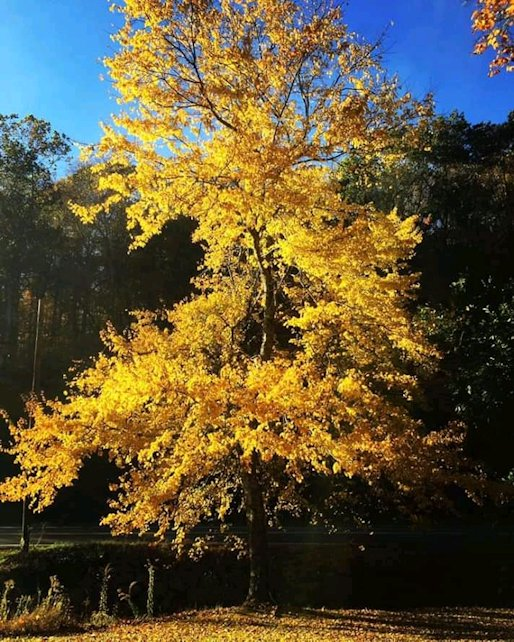
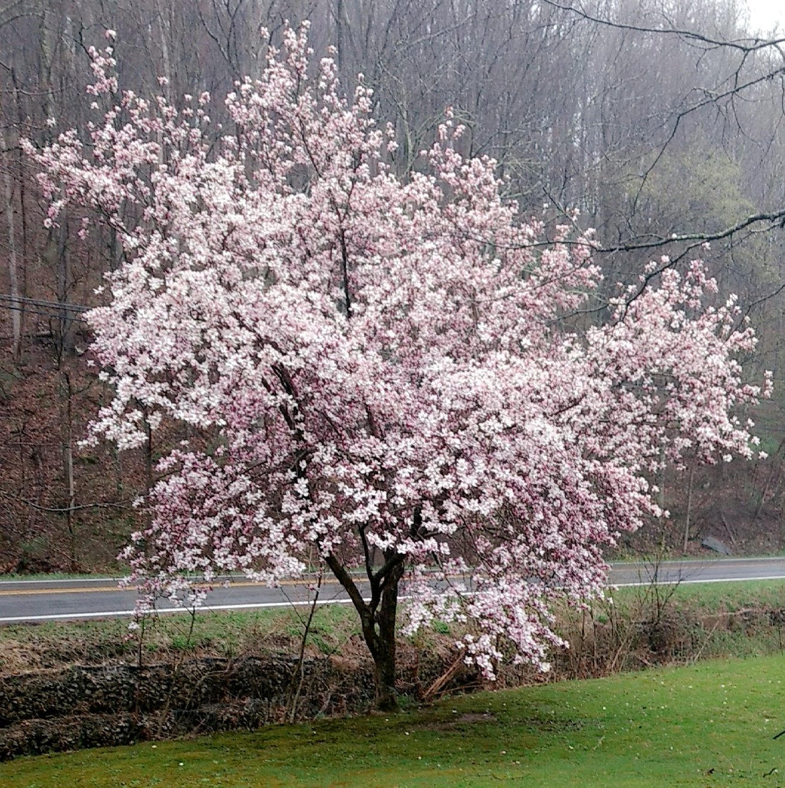
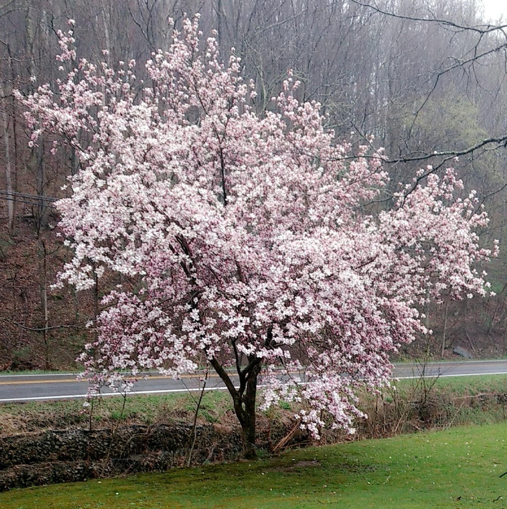

Doesn't need to be Expensive
In photography you don't need to purchase expensive equipment to take your photographs. You can use any good quality camera or cell phone camera to take your photographs. Many cell phone cameras that have a high megapixel imaging resolution, different camera modes for macro, portrait, night sight, panorama, grid settings, video stabilization and other settings are also great for taking photos!
Most Important Photography Tools
Below is the top 3 most important tools to take great photographs. Use the scroll to see the full table when on mobile devices.
| Tool | Types | Important things to Consider |
|---|---|---|
| Camera | Point-and-Shoot Digital SLR Mirrorless | Camera with either digital zoom but preferably optical zoom as it is much better for photograph quality, what type photography you will do, and budget |
| Memory Card | Depends on what camera you purchase | Larger memory storage allows you to store both video and photographs of larger sizes |
| Editing Software | Photo Editing Android Apps iOs Apps | Although Photoshop is widely used, it can be expensive, Corel PS Pro is a budget friendly software program that has the same features and editing tools There are many free apps in Google Playstore that are great for editing your photographs |
Camera
First, what camera to choose? Once you have decided whether your photography will be as a hobby or professionally now is the time to decide what camera you want to purchase. When deciding on a camera there are a few things you should keep in mind, decide how much you can afford to spend when it comes to your camera and memory card. The camera below is only one of the cameras I use ~ Cannon PowerShot SX500 IS. This camera is not very expensive and takes amazing photographs. The things to look for in a camera are size and weight, how it feels in your hand, filters, digital vs optical zoom, and the amount of storage the camera has to offer.
Many higher end cameras have interchangeable lenses, filters, camera shutter release cord, and other tools for photography. I wouldn't advise purchasing higher end cameras unless you plan doing photography professionally.

Digital Zoom vs Optical Zoom
There is a difference between digital zoom and optical zoom when choosing your camera. Optical zoom allows to you bring the object close before you take a picture of it without losing image resolution whereas with digital zoom, your camera zooms in on a part of the image and crops it which can reduce image quality and make your photos blurry or pixelated. Optical zoom is actually better than digital zoom when it comes to choosing a camera.
Memory Cards
There are many types of memory cards on the market, it is always best to research the type of memory card you plan to use. It is essential to choose a reliable brand of memory card to safeguard your photos from file loss and the storage size to have room enough for all your photographs. You choose choose a memory card size depending on what your camera calls for, I suggest buying the best card you can afford with U1 through U3 speed.
Larger faster memory card storage allows you to be able to take higher resolution images which gives you much better photo quality in printing and you can record video when you want without worrying about storage. Some important features you want to take into consideration when choosing a memory card are:
- Memory storage size
- Memory card speed (especially if using for video)
- Reliable Brand
- The specifications of camera you plan to use
Camera Photography Bag
The worst feeling in the world is dropping your camera because you are carrying too much! The best solution for this is to purchase a camera bag. Camera bags are an essential need in photography and will keep all your equipment safe from damage.
Choose a camera bag that has enough pockets to accommodate storing extra batteries, charging cords, extra sd memory cards and has enough padding inside to keep your camera and equipment safe and protected. A camera bag with good padding inside is worth paying a little extra for.
Tripods
Tripods can be very useful in taking photographs as well as a camera shutter release cord to take pictures if you plan to take your photography to a professional level. Tripods offer stability so you can get a clear stable photograph without your photograph being blurred from movement.
When purchasing a tripod purchase one that is compatible with the camera you will be using. Tripods come in many different sizes and price points so it is best to choose one that fits your budget and suits your needs.
Photographs taken with Regular Digital Camera!
I took these photographs with a regular digital camera and then used my photography editing software to edit the images. This is my way of sharing that you can take great photographs without paying for expensive equipment.
 

Post Editing Software
Taking good photographs is just one part of photography, another important aspect of photography is the software you use in editing your photographs. There are many types of software you can use to edit your photographs, cell phones have built in editing tools such as crop, rotate, portrait blur, magic eraser, areas to adjust brightness, contrast, HDR, highlights, shadow, saturation, warmth, tint, vignette, and many different filters.
One of my favorite apps I use on my phone is the "One S10 Camera" app, its has many fun tools for editing photographs. Some of the software programs you can use to edit your photographs on your computer are:
- Adobe PhotoShop
- Corel PaintShop Pro
- Gimp (free photo editing software)
- Adobe Lightroom

Want to Know More About Editing Software?
Click on the button below and the images inside to view more information and prices on the different photo editing software.
For a list of tutorials click on the links below for each editing software.
The photographs in the slideshow below were taken with my cell phone camera!


Editing Software Tutorials
If you would like to learn more about using PhotoShop, Corel PaintShop Pro, and Gimp below are some videos and tutorial links to help you get started!